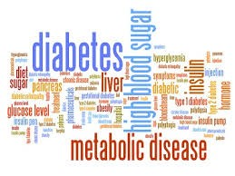

Diabetes
 Diabetes mellitus is a very serious metabolic disorder that prevents the normal breakdown and use of food, especially sugars (carbohydrates) by the body. It can damage the heart, blood vessels, kidneys, and neurological system and can cause a progressive loss of vision over many years.
Forms of Diabetes
There are multiple forms of diabetes, but the two most common forms are called type 1 and type 2 diabetes. Both forms can occur at any age, but a child is more likely to be diagnosed with type 1 diabetes.
About type 1 Diabetes:
Type 1 diabetes is caused by inadequate production of the hormone insulin by the pancreas. When that happens, the body is unable to properly metabolize sugars, which build up in the bloodstream; these sugars (also called glucose) cannot be used by the body and are excreted in the urine. This leads to the major symptoms of diabetes:
About type 2 Diabetes
Glucose is found in the blood and is the body's main source of energy. The food you eat is broken down by the body into glucose. Glucose is a type of sugar that gives energy to the cells in the body. The cells need the help of insulin to take the glucose from the blood to the cells. Insulin is made by an organ called the pancreas. In children with type 2 diabetes, the pancreas does not make enough insulin and the cells don't use the insulin very well.
Controlling and Managing Type 1 & Type 2 Diabetes
It is essential to control diabetes properly in order to avoid complications.
Important Reminders: